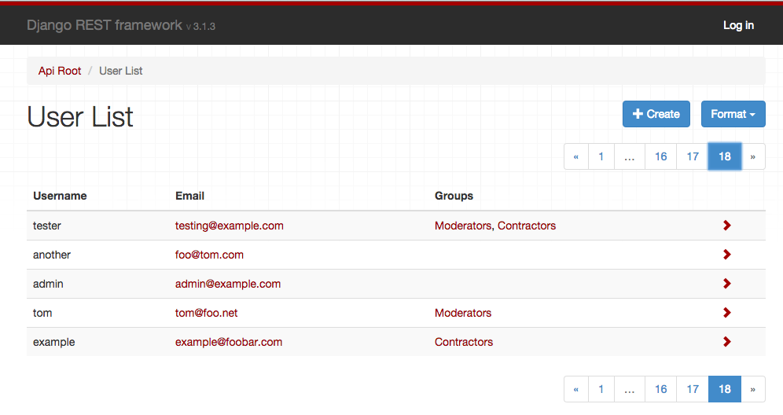

Renderers¶
Before a TemplateResponse instance can be returned to the client, it must be rendered. The rendering process takes the intermediate representation of template and context, and turns it into the final byte stream that can be served to the client.
REST framework includes a number of built in Renderer classes, that allow you to return responses with various media types. There is also support for defining your own custom renderers, which gives you the flexibility to design your own media types.
How the renderer is determined¶
The set of valid renderers for a view is always defined as a list of classes. When a view is entered REST framework will perform content negotiation on the incoming request, and determine the most appropriate renderer to satisfy the request.
The basic process of content negotiation involves examining the request's Accept header, to determine which media types it expects in the response. Optionally, format suffixes on the URL may be used to explicitly request a particular representation. For example the URL http://example.com/api/users_count.json might be an endpoint that always returns JSON data.
For more information see the documentation on content negotiation.
Setting the renderers¶
The default set of renderers may be set globally, using the DEFAULT_RENDERER_CLASSES setting. For example, the following settings would use JSON as the main media type and also include the self describing API.
REST_FRAMEWORK = {
'DEFAULT_RENDERER_CLASSES': [
'rest_framework.renderers.JSONRenderer',
'rest_framework.renderers.BrowsableAPIRenderer',
]
}
You can also set the renderers used for an individual view, or viewset,
using the APIView class-based views.
from django.contrib.auth.models import User
from rest_framework.renderers import JSONRenderer
from rest_framework.response import Response
from rest_framework.views import APIView
class UserCountView(APIView):
"""
A view that returns the count of active users in JSON.
"""
renderer_classes = [JSONRenderer]
def get(self, request, format=None):
user_count = User.objects.filter(active=True).count()
content = {'user_count': user_count}
return Response(content)
Or, if you're using the @api_view decorator with function based views.
@api_view(['GET'])
@renderer_classes([JSONRenderer])
def user_count_view(request, format=None):
"""
A view that returns the count of active users in JSON.
"""
user_count = User.objects.filter(active=True).count()
content = {'user_count': user_count}
return Response(content)
Ordering of renderer classes¶
It's important when specifying the renderer classes for your API to think about what priority you want to assign to each media type. If a client underspecifies the representations it can accept, such as sending an Accept: */* header, or not including an Accept header at all, then REST framework will select the first renderer in the list to use for the response.
For example if your API serves JSON responses and the HTML browsable API, you might want to make JSONRenderer your default renderer, in order to send JSON responses to clients that do not specify an Accept header.
If your API includes views that can serve both regular webpages and API responses depending on the request, then you might consider making TemplateHTMLRenderer your default renderer, in order to play nicely with older browsers that send broken accept headers.
API Reference¶
JSONRenderer¶
Renders the request data into JSON, using utf-8 encoding.
Note that the default style is to include unicode characters, and render the response using a compact style with no unnecessary whitespace:
{"unicode black star":"★","value":999}
The client may additionally include an 'indent' media type parameter, in which case the returned JSON will be indented. For example Accept: application/json; indent=4.
{
"unicode black star": "★",
"value": 999
}
The default JSON encoding style can be altered using the UNICODE_JSON and COMPACT_JSON settings keys.
.media_type: application/json
.format: 'json'
.charset: None
TemplateHTMLRenderer¶
Renders data to HTML, using Django's standard template rendering.
Unlike other renderers, the data passed to the Response does not need to be serialized. Also, unlike other renderers, you may want to include a template_name argument when creating the Response.
The TemplateHTMLRenderer will create a RequestContext, using the response.data as the context dict, and determine a template name to use to render the context.
Note
When used with a view that makes use of a serializer the Response sent for rendering may not be a dictionary and will need to be wrapped in a dict before returning to allow the TemplateHTMLRenderer to render it. For example:
response.data = {'results': response.data}
The template name is determined by (in order of preference):
- An explicit
template_nameargument passed to the response. - An explicit
.template_nameattribute set on this class. - The return result of calling
view.get_template_names().
An example of a view that uses TemplateHTMLRenderer:
class UserDetail(generics.RetrieveAPIView):
"""
A view that returns a templated HTML representation of a given user.
"""
queryset = User.objects.all()
renderer_classes = [TemplateHTMLRenderer]
def get(self, request, *args, **kwargs):
self.object = self.get_object()
return Response({'user': self.object}, template_name='user_detail.html')
You can use TemplateHTMLRenderer either to return regular HTML pages using REST framework, or to return both HTML and API responses from a single endpoint.
If you're building websites that use TemplateHTMLRenderer along with other renderer classes, you should consider listing TemplateHTMLRenderer as the first class in the renderer_classes list, so that it will be prioritized first even for browsers that send poorly formed ACCEPT: headers.
See the HTML & Forms Topic Page for further examples of TemplateHTMLRenderer usage.
.media_type: text/html
.format: 'html'
.charset: utf-8
See also: StaticHTMLRenderer
StaticHTMLRenderer¶
A simple renderer that simply returns pre-rendered HTML. Unlike other renderers, the data passed to the response object should be a string representing the content to be returned.
An example of a view that uses StaticHTMLRenderer:
@api_view(['GET'])
@renderer_classes([StaticHTMLRenderer])
def simple_html_view(request):
data = '<html><body><h1>Hello, world</h1></body></html>'
return Response(data)
You can use StaticHTMLRenderer either to return regular HTML pages using REST framework, or to return both HTML and API responses from a single endpoint.
.media_type: text/html
.format: 'html'
.charset: utf-8
See also: TemplateHTMLRenderer
BrowsableAPIRenderer¶
Renders data into HTML for the Browsable API:

This renderer will determine which other renderer would have been given highest priority, and use that to display an API style response within the HTML page.
.media_type: text/html
.format: 'api'
.charset: utf-8
.template: 'rest_framework/api.html'
Customizing BrowsableAPIRenderer¶
By default the response content will be rendered with the highest priority renderer apart from BrowsableAPIRenderer. If you need to customize this behavior, for example to use HTML as the default return format, but use JSON in the browsable API, you can do so by overriding the get_default_renderer() method. For example:
class CustomBrowsableAPIRenderer(BrowsableAPIRenderer):
def get_default_renderer(self, view):
return JSONRenderer()
AdminRenderer¶
Renders data into HTML for an admin-like display:

This renderer is suitable for CRUD-style web APIs that should also present a user-friendly interface for managing the data.
Note that views that have nested or list serializers for their input won't work well with the AdminRenderer, as the HTML forms are unable to properly support them.
Note
The AdminRenderer is only able to include links to detail pages when a properly configured URL_FIELD_NAME (url by default) attribute is present in the data. For HyperlinkedModelSerializer this will be the case, but for ModelSerializer or plain Serializer classes you'll need to make sure to include the field explicitly.
For example here we use models get_absolute_url method:
class AccountSerializer(serializers.ModelSerializer):
url = serializers.CharField(source='get_absolute_url', read_only=True)
class Meta:
model = Account
.media_type: text/html
.format: 'admin'
.charset: utf-8
.template: 'rest_framework/admin.html'
HTMLFormRenderer¶
Renders data returned by a serializer into an HTML form. The output of this renderer does not include the enclosing <form> tags, a hidden CSRF input or any submit buttons.
This renderer is not intended to be used directly, but can instead be used in templates by passing a serializer instance to the render_form template tag.
{% load rest_framework %}
<form action="/submit-report/" method="post">
{% csrf_token %}
{% render_form serializer %}
<input type="submit" value="Save" />
</form>
For more information see the HTML & Forms documentation.
.media_type: text/html
.format: 'form'
.charset: utf-8
.template: 'rest_framework/horizontal/form.html'
MultiPartRenderer¶
This renderer is used for rendering HTML multipart form data. It is not suitable as a response renderer, but is instead used for creating test requests, using REST framework's test client and test request factory.
.media_type: multipart/form-data; boundary=BoUnDaRyStRiNg
.format: 'multipart'
.charset: utf-8
Custom renderers¶
To implement a custom renderer, you should override BaseRenderer, set the .media_type and .format properties, and implement the .render(self, data, accepted_media_type=None, renderer_context=None) method.
The method should return a bytestring, which will be used as the body of the HTTP response.
The arguments passed to the .render() method are:
-
data: the request data, as set by theResponse()instantiation. -
accepted_media_type=None: optional. If provided, this is the accepted media type, as determined by the content negotiation stage. Depending on the client'sAccept:header, this may be more specific than the renderer'smedia_typeattribute, and may include media type parameters. For example"application/json; nested=true". -
renderer_context=None: optional. If provided, this is a dictionary of contextual information provided by the view. By default this will include the following keys:view,request,response,args,kwargs.
Example¶
The following is an example plaintext renderer that will return a response with the data parameter as the content of the response.
from django.utils.encoding import smart_str
from rest_framework import renderers
class PlainTextRenderer(renderers.BaseRenderer):
media_type = 'text/plain'
format = 'txt'
def render(self, data, accepted_media_type=None, renderer_context=None):
return smart_str(data, encoding=self.charset)
Setting the character set¶
By default renderer classes are assumed to be using the UTF-8 encoding. To use a different encoding, set the charset attribute on the renderer.
class PlainTextRenderer(renderers.BaseRenderer):
media_type = 'text/plain'
format = 'txt'
charset = 'iso-8859-1'
def render(self, data, accepted_media_type=None, renderer_context=None):
return data.encode(self.charset)
Note that if a renderer class returns a unicode string, then the response content will be coerced into a bytestring by the Response class, with the charset attribute set on the renderer used to determine the encoding.
If the renderer returns a bytestring representing raw binary content, you should set a charset value of None, which will ensure the Content-Type header of the response will not have a charset value set.
In some cases you may also want to set the render_style attribute to 'binary'. Doing so will also ensure that the browsable API will not attempt to display the binary content as a string.
class JPEGRenderer(renderers.BaseRenderer):
media_type = 'image/jpeg'
format = 'jpg'
charset = None
render_style = 'binary'
def render(self, data, accepted_media_type=None, renderer_context=None):
return data
Advanced renderer usage¶
You can do some pretty flexible things using REST framework's renderers. Some examples...
- Provide either flat or nested representations from the same endpoint, depending on the requested media type.
- Serve both regular HTML webpages, and JSON based API responses from the same endpoints.
- Specify multiple types of HTML representation for API clients to use.
- Underspecify a renderer's media type, such as using
media_type = 'image/*', and use theAcceptheader to vary the encoding of the response.
Varying behavior by media type¶
In some cases you might want your view to use different serialization styles depending on the accepted media type. If you need to do this you can access request.accepted_renderer to determine the negotiated renderer that will be used for the response.
For example:
@api_view(['GET'])
@renderer_classes([TemplateHTMLRenderer, JSONRenderer])
def list_users(request):
"""
A view that can return JSON or HTML representations
of the users in the system.
"""
queryset = Users.objects.filter(active=True)
if request.accepted_renderer.format == 'html':
# TemplateHTMLRenderer takes a context dict,
# and additionally requires a 'template_name'.
# It does not require serialization.
data = {'users': queryset}
return Response(data, template_name='list_users.html')
# JSONRenderer requires serialized data as normal.
serializer = UserSerializer(instance=queryset)
data = serializer.data
return Response(data)
Underspecifying the media type¶
In some cases you might want a renderer to serve a range of media types.
In this case you can underspecify the media types it should respond to, by using a media_type value such as image/*, or */*.
If you underspecify the renderer's media type, you should make sure to specify the media type explicitly when you return the response, using the content_type attribute. For example:
return Response(data, content_type='image/png')
Designing your media types¶
For the purposes of many Web APIs, simple JSON responses with hyperlinked relations may be sufficient. If you want to fully embrace RESTful design and HATEOAS you'll need to consider the design and usage of your media types in more detail.
In the words of Roy Fielding, "A REST API should spend almost all of its descriptive effort in defining the media type(s) used for representing resources and driving application state, or in defining extended relation names and/or hypertext-enabled mark-up for existing standard media types.".
For good examples of custom media types, see GitHub's use of a custom application/vnd.github+json media type, and Mike Amundsen's IANA approved application/vnd.collection+json JSON-based hypermedia.
HTML error views¶
Typically a renderer will behave the same regardless of if it's dealing with a regular response, or with a response caused by an exception being raised, such as an Http404 or PermissionDenied exception, or a subclass of APIException.
If you're using either the TemplateHTMLRenderer or the StaticHTMLRenderer and an exception is raised, the behavior is slightly different, and mirrors Django's default handling of error views.
Exceptions raised and handled by an HTML renderer will attempt to render using one of the following methods, by order of precedence.
- Load and render a template named
{status_code}.html. - Load and render a template named
api_exception.html. - Render the HTTP status code and text, for example "404 Not Found".
Templates will render with a RequestContext which includes the status_code and details keys.
Note
If DEBUG=True, Django's standard traceback error page will be displayed instead of rendering the HTTP status code and text.
Third party packages¶
The following third party packages are also available.
YAML¶
REST framework YAML provides YAML parsing and rendering support. It was previously included directly in the REST framework package, and is now instead supported as a third-party package.
Installation & configuration¶
Install using pip.
$ pip install djangorestframework-yaml
Modify your REST framework settings.
REST_FRAMEWORK = {
'DEFAULT_PARSER_CLASSES': [
'rest_framework_yaml.parsers.YAMLParser',
],
'DEFAULT_RENDERER_CLASSES': [
'rest_framework_yaml.renderers.YAMLRenderer',
],
}
XML¶
REST Framework XML provides a simple informal XML format. It was previously included directly in the REST framework package, and is now instead supported as a third-party package.
Installation & configuration¶
Install using pip.
$ pip install djangorestframework-xml
Modify your REST framework settings.
REST_FRAMEWORK = {
'DEFAULT_PARSER_CLASSES': [
'rest_framework_xml.parsers.XMLParser',
],
'DEFAULT_RENDERER_CLASSES': [
'rest_framework_xml.renderers.XMLRenderer',
],
}
JSONP¶
REST framework JSONP provides JSONP rendering support. It was previously included directly in the REST framework package, and is now instead supported as a third-party package.
Warning
If you require cross-domain AJAX requests, you should generally be using the more modern approach of CORS as an alternative to JSONP. See the CORS documentation for more details.
The jsonp approach is essentially a browser hack, and is only appropriate for globally readable API endpoints, where GET requests are unauthenticated and do not require any user permissions.
Installation & configuration¶
Install using pip.
$ pip install djangorestframework-jsonp
Modify your REST framework settings.
REST_FRAMEWORK = {
'DEFAULT_RENDERER_CLASSES': [
'rest_framework_jsonp.renderers.JSONPRenderer',
],
}
MessagePack¶
MessagePack is a fast, efficient binary serialization format. Juan Riaza maintains the djangorestframework-msgpack package which provides MessagePack renderer and parser support for REST framework.
Microsoft Excel: XLSX (Binary Spreadsheet Endpoints)¶
XLSX is the world's most popular binary spreadsheet format. Tim Allen of The Wharton School maintains drf-excel, which renders an endpoint as an XLSX spreadsheet using OpenPyXL, and allows the client to download it. Spreadsheets can be styled on a per-view basis.
Installation & configuration¶
Install using pip.
$ pip install drf-excel
Modify your REST framework settings.
REST_FRAMEWORK = {
...
'DEFAULT_RENDERER_CLASSES': [
'rest_framework.renderers.JSONRenderer',
'rest_framework.renderers.BrowsableAPIRenderer',
'drf_excel.renderers.XLSXRenderer',
],
}
To avoid having a file streamed without a filename (which the browser will often default to the filename "download", with no extension), we need to use a mixin to override the Content-Disposition header. If no filename is provided, it will default to export.xlsx. For example:
from rest_framework.viewsets import ReadOnlyModelViewSet
from drf_excel.mixins import XLSXFileMixin
from drf_excel.renderers import XLSXRenderer
from .models import MyExampleModel
from .serializers import MyExampleSerializer
class MyExampleViewSet(XLSXFileMixin, ReadOnlyModelViewSet):
queryset = MyExampleModel.objects.all()
serializer_class = MyExampleSerializer
renderer_classes = [XLSXRenderer]
filename = 'my_export.xlsx'
CSV¶
Comma-separated values are a plain-text tabular data format, that can be easily imported into spreadsheet applications. Mjumbe Poe maintains the djangorestframework-csv package which provides CSV renderer support for REST framework.
UltraJSON¶
UltraJSON is an optimized C JSON encoder which can give significantly faster JSON rendering. Adam Mertz maintains drf_ujson2, a fork of the now unmaintained drf-ujson-renderer, which implements JSON rendering using the UJSON package.
CamelCase JSON¶
djangorestframework-camel-case provides camel case JSON renderers and parsers for REST framework. This allows serializers to use Python-style underscored field names, but be exposed in the API as Javascript-style camel case field names. It is maintained by Vitaly Babiy.
Pandas (CSV, Excel, PNG)¶
Django REST Pandas provides a serializer and renderers that support additional data processing and output via the Pandas DataFrame API. Django REST Pandas includes renderers for Pandas-style CSV files, Excel workbooks (both .xls and .xlsx), and a number of other formats. It is maintained by S. Andrew Sheppard as part of the wq Project.
LaTeX¶
Rest Framework Latex provides a renderer that outputs PDFs using Lualatex. It is maintained by Pebble (S/F Software).